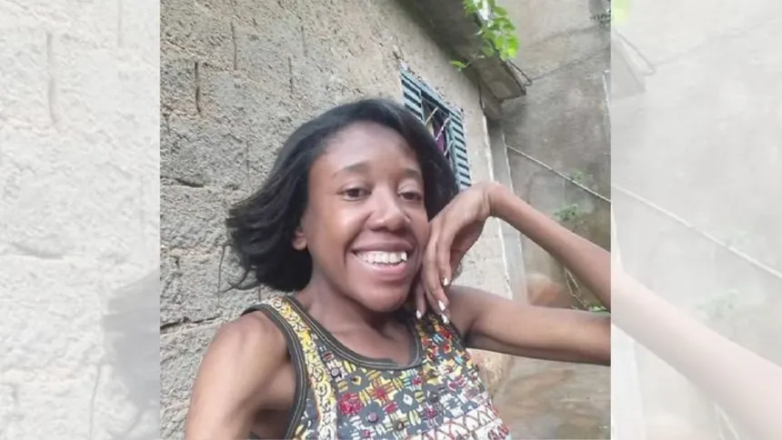
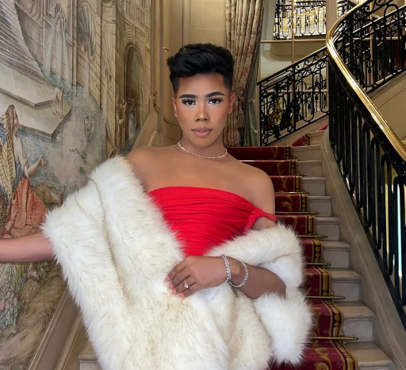
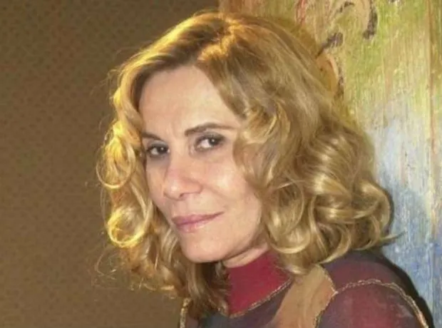
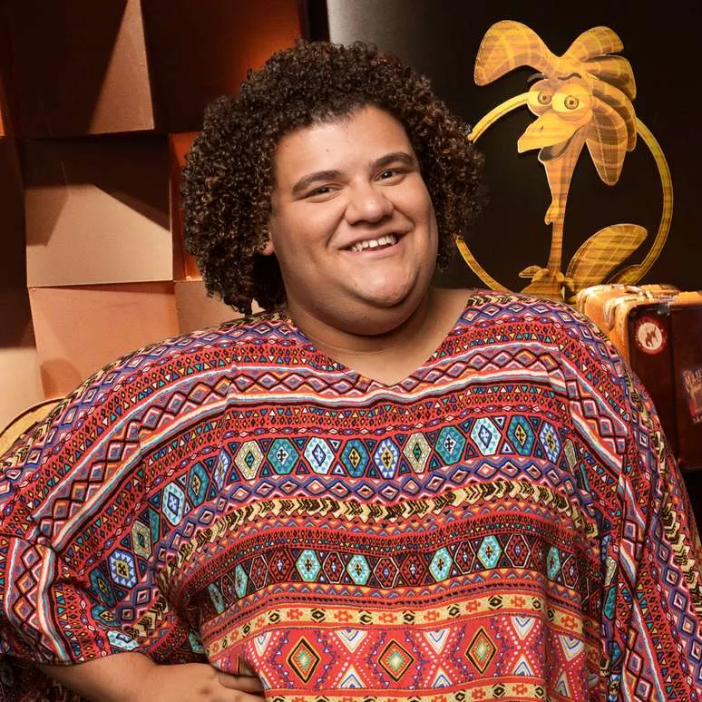
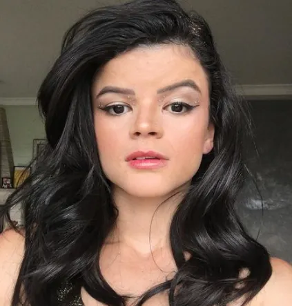
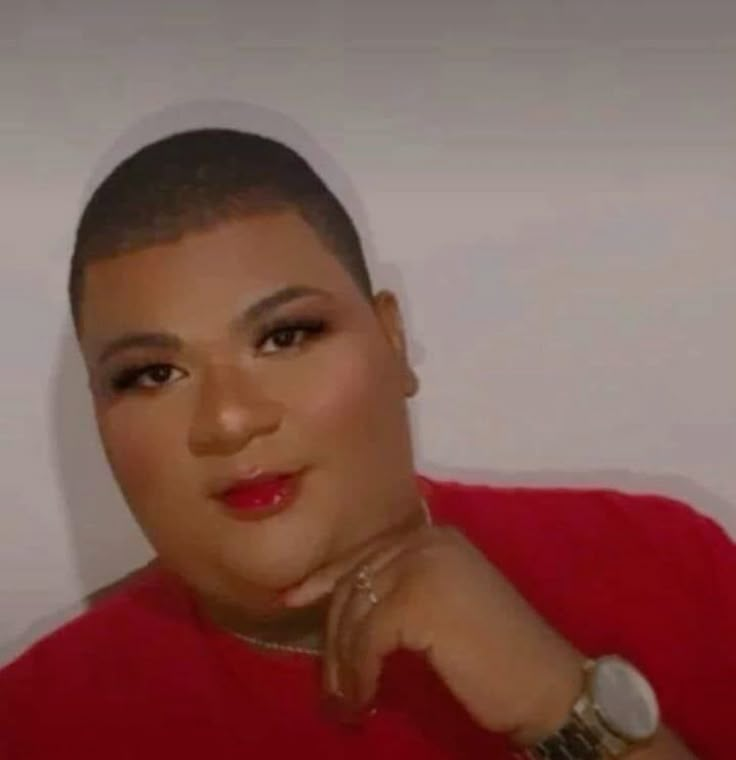

Vereadores e Equipe

Maria José (PRESIDENTA)
Biografia:
Figura de grande influência no cenário político e cultural do Floptok, Maria José conquistou seu espaço por meio de sua personalidade marcante e posicionamentos inesquecíveis. À frente da Câmara, promete defender os interesses da população, fiscalizar os acontecimentos e garantir que ninguém saia impune dos acontecimentos mais recentes.
Email:
Igona (VICE-PRESIDENTA)
Biografia:
Conhecida por sua presença marcante e personalidade inconfundível, Igona chegou à política do Floptok prometendo revolucionar a administração pública. Como vice-presidenta, atua na defesa da liberdade de expressão, da autenticidade e do direito de cada cidadão viver seu próprio momento de diva. Sua atuação é marcada por posicionamentos fortes e zero paciência para quem tenta diminuir seu brilho.
Email:
Tidinha Meneghel (1ª SECRETÁRIA)
Biografia:
Conhecida por sua personalidade comunicativa e presença marcante, Tidinha assumiu seu mandato com o compromisso de contribuir para o desenvolvimento de Picos. Como primeira secretária da Câmara Municipal, participa da organização das sessões legislativas e do registro das atividades parlamentares. Defende a transparência administrativa, a valorização da cultura local e o diálogo com a população.
Email:

Kylie Gui (2ª SECRETÁRIA)
Biografia:
Representante de uma nova geração de lideranças, Kylie Gui destaca-se por sua criatividade e capacidade de comunicação. Como segunda secretária da Câmara Municipal de Picos, atua no incentivo à participação dos jovens na política, na valorização da cultura e no desenvolvimento de iniciativas voltadas à inclusão social. Defende uma gestão moderna, participativa e próxima dos cidadãos.
Email:
Rodrigo Apresentador (ASSESSOR DE COMUNICAÇÃO)
Biografia:
Conhecido por sua desenvoltura diante das câmeras e facilidade de comunicação, Rodrigo Apresentador atua como assessor de comunicação da Câmara Municipal de Picos. É responsável por contribuir com a divulgação das atividades legislativas, informar a população sobre projetos, sessões e decisões da Câmara, além de auxiliar na comunicação entre a instituição e os cidadãos. Seu trabalho busca tornar as informações públicas mais claras, acessíveis e próximas da comunidade.
Email:
Agatha Nunes (ASSESSORA DE CULTURA E PARTICIPAÇÃO POPULAR)
Biografia:
Reconhecida por sua personalidade marcante e interesse pelas manifestações culturais, Agatha Nunes atua como assessora de cultura e participação popular da Câmara Municipal de Picos. Desenvolve atividades voltadas à valorização da cultura local, ao incentivo de iniciativas culturais e à aproximação entre a população e o poder legislativo. Também busca estimular a participação dos cidadãos nas discussões e ações de interesse público, contribuindo para uma Câmara mais participativa e próxima da comunidade.
Email:

Nazaré (OUVIDORA)
Biografia:
Famosa por sua expressividade e pelo olhar desconfiado que nenhuma mentira consegue enganar, Nazaré chegou à Câmara Municipal de Picos com uma missão: garantir que nenhuma reclamação fique sem resposta. Como ouvidora, recebe as demandas da população, registra cada caso, cobra os setores responsáveis e acompanha tudo de perto até a solução. Defende a transparência, o respeito ao cidadão e o direito de todo morador ser ouvido, mesmo quando o assunto é "aquela coisa que ninguém quer explicar".
Email:

Gominho (ASSESSOR DE RELAÇÕES COMUNITÁRIAS)
Biografia:
Doce, simpático e sempre de bom humor, Gominho é a alegria da Câmara Municipal de Picos. Como assessor de relações comunitárias, percorre bairros e povoados, conversa com moradores, associações e lideranças locais e leva as demandas da cidade para dentro do plenário. Acredita que todo problema fica mais leve com diálogo, bom humor e um punhado de balas na mochila para quebrar o gelo. Seu trabalho aproxima a população do poder legislativo e fortalece o vínculo entre a Câmara e a comunidade.
Email:
Dolly Parton (ASSESSORA DE MÚSICA E TRADIÇÕES)
Biografia:
Cantora e violeira de mão cheia, Dolly Parton une o country e o forró em apresentações que já animaram festas por todo o sertão piauiense. Na Câmara Municipal de Picos, atua na valorização dos artistas locais, organiza saraus, rodas de viola e encontros culturais e apoia projetos que preservam as tradições musicais da região. Defende que a música é uma ferramenta de união e que toda boa decisão começa com uma melodia bem tocada.
Email:
Gretchen (COORDENADORA DE JUVENTUDE E DANÇA)
Biografia:
Diva do pop dançante e dona de uma energia contagiante, Gretchen coordena projetos de dança, esporte e lazer voltados aos jovens de Picos. À frente de oficinas, torneios e apresentações abertas ao público, incentiva a prática de atividades culturais e esportivas como caminho para a inclusão social. Com muito brilho e figurino à altura, transforma qualquer evento da Câmara em festa, sempre defendendo que cultura também é política pública.
Email:

Valeria Almeida (APRESENTADORA OFICIAL DAS SESSÕES)
Biografia:
Carismática e dona de uma voz inconfundível, Valeria Almeida conduz as transmissões e os eventos oficiais da Câmara Municipal de Picos. Com linguagem clara e animada, apresenta a pauta de cada sessão, explica os projetos em votação e traduz o "politiquês" para que toda a população acompanhe as decisões. Seu compromisso é tornar a informação pública acessível, dinâmica e próxima de quem mais importa: o cidadão picoense.
Email:

João Pedro (ASSESSOR DE PROTOCOLO E REQUERIMENTOS)
Biografia:
Educado até demais, João Pedro é conhecido por iniciar todo atendimento com um gentil "olá, gostaria de ajudar". Responsável pelo protocolo e pelos requerimentos da Câmara Municipal de Picos, garante que cada pedido da população seja registrado, encaminhado ao setor correto e respondido dentro do prazo. Defende um atendimento organizado, cordial e transparente, em que ninguém sai sem uma resposta e, de preferência, sem um "muito obrigado".